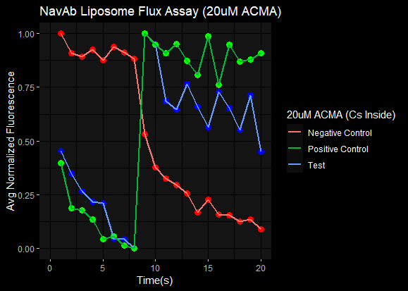
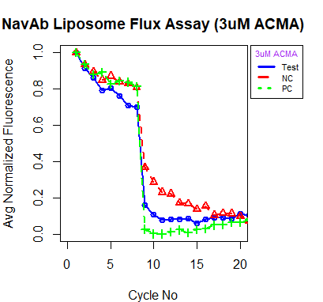

Tingwei Adeck November 20, 2023


⏩ 📽️ Quick start
For quick starters, please visit the {video tutorial} for an illustration on how to effectively use the package. The video tutorial only covers DAT files based on the assumption that MOST users will be interested in using the package for DAT files.
✍️ Introduction
{normfluodbf} is used to clean and normalize DBF and DAT files obtained from liposome flux assay experiments performed with the FLUOstar microplate reader. The expectation is this package is not limited to this assay type but other assay types performed with the same instrument. The final data frames obtained from this package are ready for insightful data analysis and for the creation of amazing visuals (using ggplot2) that help in making scientific deductions or making presentations to project stakeholders. This project firmly represents my core belief in the public dissemination of scientific information. My convictions on this idea of public dissemination were driven by the book “What Mad Pursuit” by Francis Crick. Visit {my page} for details on the concept behind the project.

⏬ Installation
Developmental Version
The development version of {normfluodbf} can be installed as illustrated below:
devtools::install_github("AlphaPrime7/normfluodbf")
pak::pak("AlphaPrime7/normfluodbf")
remotes::install_github("AlphaPrime7/normfluodbf")CRAN Version
The CRAN version of {normfluodbf} can be installed as illustrated below:
install.packages("normfluodbf")
library(normfluodbf)Local Installation
- Visit the
{normfluodbf_builds}to download the zip files into your desired directory. - This repository will be updated with the latest accepted CRAN version when possible.
install.packages("normfluodbf_1.5.2.tar.gz", repos = NULL, type = "source")
library(devtools)
install_local("normfluodbf_1.5.2.tar.gz")
library(remotes)
remotes::install_local("normfluodbf_1.5.2.tar.gz")🕵️ Use Scenarios
🧭 DBF Files Case-Study 
- Here examples are presented on how this package handles DBF files.
Backward Compatible Function
- This methodology is grandfathered for initial adopters of normfluodbf.
- Package illustration with DBF files:
#library(normfluodbf)
liposomes_214 <- system.file("extdata", "liposomes_214.dbf", package = "normfluodbf")
normalized_data <- norm_tidy_dbf(liposomes_214, norm_scale = 'hundred')New Function
- This next methodology provides easier syntax and I prefer this function name over the function name above.
library(normfluodbf)
liposomes_214 <- system.file("extdata", "liposomes_214.dbf", package = "normfluodbf")
normalized_data <- normfluordbf(liposomes_214)
normalized_data <- normfluordbf(liposomes_214)Advanced Features Illustration
- The next section elaborates on the new features added for handling DBF files.
DBF Normalization Procedures
library(normfluodbf)
liposomes_214 <- system.file("extdata", "liposomes_214.dbf", package = "normfluodbf")
normalized_data <- norm_tidy_dbf(liposomes_214, norm_scale = 'one')
normalized_data100 <- norm_tidy_dbf(liposomes_214, norm_scale = 'hundred')
normalized_dataz <- norm_tidy_dbf(liposomes_214, norm_scale = 'z-score')
# The user can add a transformation parameter
normalized_datazt <- norm_tidy_dbf(liposomes_214, norm_scale = 'z-score', transformed = 'log')
library(normfluodbf)
liposomes_214 <- system.file("extdata", "liposomes_214.dbf", package = "normfluodbf")
normalized_data <- normfluordbf(liposomes_214, norm_scale = 'one')
normalized_data100 <- normfluordbf(liposomes_214, norm_scale = 'hundred')
normalized_dataz <- normfluordbf(liposomes_214, norm_scale = 'z-score')
# The user can add a transformation parameter
normalized_datazt <- normfluordbf(liposomes_214, norm_scale = 'z-score', transformed = 'log')🧭 DAT Files Case-Study
Advanced Function
- This methodology was provided as a minor update in normfluodbf 1.5.2.
- This update was significantly bigger than expected and should have been a major update but by definition when backward compatibility is maintained with the previous version, it should be considered a minor update.
- These three parameters are a MUST for this function to work.
library(normfluodbf)
dat1 <- system.file("extdata", "dat_1.dat", package = "normfluodbf")
normalized_data <- normfluodat(dat1, tnp = 3, cycles = 40, rows_used = c('A','B','C'))Base Function
- This next methodology is the base version of the function above. This methodology has less features than the function above.
library(normfluodbf)
dat2 <- system.file("extdata", "dat_2.dat", package = "normfluodbf")
normalized_data <- normfluordat(dat2, tnp = 3, cycles = 40, rows_used = c('A','B','C'))- Please note that the examples above indicate the simplest scenarios as these functions have more features than presented in here.
DAT Advanced Procedures
- The next sections elaborate on the built-in features for handling DAT files.
Using The rows_used parameter
- This parameter is used alone and the user need not worry about providing the columns used.
- The default read direction is vertical.
- The program has a robust algorithm or recipe for determining attribute names based on the rows used.
- Users are strongly encouraged to provide the rows_used parameter.
library(normfluodbf)
dat2 <- system.file("extdata", "dat_2.dat", package = "normfluodbf")
n <- c('A','B','C') #rows used
normalized_data16 <- normfluodat(dat2, tnp = 3, cycles = 40, n)- Pay attention to the illustrations below. The setup below represents a standard experimental setup.
| Sample_Type (TNP) | 96 | 1 | 2 | 3 | 4 | 5 | 6 | 7 | 8 | 9 | 10 | 11 | 12 |
|---|---|---|---|---|---|---|---|---|---|---|---|---|---|
| Test | A | X1 | X2 | X3 | X4 | X5 | X6 | X7 | X8 | X9 | X10 | X11 | X12 |
| Negative | B | X13 | X14 | X15 | X16 | X17 | X18 | X19 | X20 | X21 | X22 | X23 | X24 |
| Positive | C | X25 | X26 | X27 | X28 | X29 | X30 | X31 | X32 | X33 | X34 | X35 | X36 |
| D | |||||||||||||
| E | |||||||||||||
| F | |||||||||||||
| G | |||||||||||||
| H |
- The default or vertical read direction means the final data frame is presented in the format below.
| A1 (Test) | B1 (Negative) | C1 (Positive) | Cycle_No |
|---|---|---|---|
| A1 | B1 | C1 | 1 |
| A1 | B1 | C1 | 2 |
| A1 | B1 | C1 | 3 |
| A1 | B1 | C1 | 4 |
| A1 | B1 | C1 | 5 |
| A1 | B1 | C1 | 6 |
| A1 | B1 | C1 | …38 |
| A1 | B1 | C1 | …39 |
| A1 | B1 | C1 | …40 |
Using The rows_used and cols_used parameter
- The cols_used parameter is only used if the user suspects some inconsistencies in their experimental procedure. Otherwise, the user should let the program determine the columns used.
- The cols_used parameter is especially relevant when the user loads samples in an unorthodox way.
- The default read direction is vertical as indicated earlier.
- Users are advised NOT to supply the cols_used because the program has a robust algorithm for determining the cols_used.
library(normfluodbf)
dat2 <- system.file("extdata", "dat_2.dat", package = "normfluodbf")
n <- c('A','B','C')
c <- c(5,6,7)
normalized_data <- normfluodat(dat2, tnp = 3, cycles = 40, rows_used=n, cols_used=c)| A5 (Test) | B5 (Negative) | C5 (Positive) | Cycle_No |
|---|---|---|---|
| A5 | B5 | C6 | 1 |
| A5 | B5 | C6 | 2 |
| A5 | B5 | C6 | 3 |
Using The user_specific_labels parameter
- If the user provides the user_specific_labels parameter then they CANNOT use the rows_used and cols_used parameter together OR the rows_used parameter alone. It is a trade-off where the user either lets the program generate column names for them or the user decides to take CONTROL and do it themselves.
- This user_specific_labels parameter is a proactive move from the user if the user had a complicated experimental setup that can lead to wrong attribute names.
library(normfluodbf)
dat2 <- system.file("extdata", "dat_2.dat", package = "normfluodbf")
manual_cols <- c('A1','B1','C1')
normalized_data <- normfluodat(dat2, tnp = 3, cycles = 40, user_specific_labels = manual_cols)Hypothetically, if the user uses the rows and columns indicated in the examples in Using The rows_used and cols_used parameter but skips some wells, then the user can simply go ahead and use the user_specific_labels to add the correct column names for the final data frame.
However, if the scenario above occurs where the user indicates 9 wells should be used but the program detects fewer than 9 samples, then the program will inform the user and ask the user to choose from a list of column names. Illustration below:
| Sample_Type (TNP) | 96 | 1 | 2 | 3 | 4 | 5 | 6 | 7 | 8 | 9 | 10 | 11 | 12 |
|---|---|---|---|---|---|---|---|---|---|---|---|---|---|
| Test | A | X1 | X4 | X3 | |||||||||
| Negative | B | X2 | X29 | ||||||||||
| Positive | C | X25 | X28 | ||||||||||
| D | |||||||||||||
| E | |||||||||||||
| F |
🧙♂️️ Using The read_direction parameter
- As indicated in all the previous examples, the default read direction is vertical and I have provided illustrations in the form of tables that shows the expected outcome.
- The read_direction can be indicated explicitly as vertical or left as NULL but must be indicated explicitly as horizontal to obtain a different outcome.
library(normfluodbf)
dat2 <- system.file("extdata", "dat_2.dat", package = "normfluodbf")
manual_cols <- c('A1','B1','C1')
normalized_data <- normfluodat(dat2, tnp = 3, cycles = 40, n, read_direction = 'horizontal')| Sample_Type (TNP) | 96 | 1 | 2 | 3 | 4 | 5 | 6 | 7 | 8 | 9 | 10 | 11 | 12 |
|---|---|---|---|---|---|---|---|---|---|---|---|---|---|
| Test | A | X1 | X2 | X3 | X4 | X5 | X6 | X7 | X8 | X9 | X10 | X11 | X12 |
| Negative | B | X13 | X14 | X15 | X16 | X17 | X18 | X19 | X20 | X21 | X22 | X23 | X24 |
| Positive | C | X25 | X26 | X27 | X28 | X29 | X30 | X31 | X32 | X33 | X34 | X35 | X36 |
| D | |||||||||||||
| E | |||||||||||||
| F | |||||||||||||
| G | |||||||||||||
| H |
- The horizontal read direction means the final data frame is presented in the format below.
| A1 (Test) | A2 (Test) | A3 (Test) | Cycle_No |
|---|---|---|---|
| A1 | A2 | A3 | 1 |
| A1 | A2 | A3 | 2 |
| A1 | A2 | A3 | 3 |
| A1 | A2 | A3 | 4 |
| A1 | A2 | A3 | 5 |
| A1 | A2 | A3 | 6 |
| A1 | A2 | A3 | …38 |
| A1 | A2 | A3 | …39 |
| A1 | A2 | A3 | …40 |
Using The norm_scale parameter
- Just like the DBF procedure, I have provided a few options for normalization scales.
- My favorite is the z-score scale as it provides more clarity in thinking about the results.
library(normfluodbf)
dat2 <- system.file("extdata", "dat_2.dat", package = "normfluodbf")
manual_cols <- c('A1','B1','C1')
normalized_data <- normfluodat(dat2, tnp = 3, cycles = 40, n, read_direction = 'horizontal', norm_scale = 'hundred')The Non-standard Experimental Setup
- Below is a look at the non-standard experimental setup.
| Sample_Type | 96 | Test | Negative | Positive | 4 | 5 | 6 | 7 | 8 | 9 | 10 | 11 | 12 |
|---|---|---|---|---|---|---|---|---|---|---|---|---|---|
| A | X1 | X2 | X3 | X4 | X5 | X6 | X7 | X8 | X9 | X10 | X11 | X12 | |
| B | X13 | X14 | X15 | X16 | X17 | X18 | X19 | X20 | X21 | X22 | X23 | X24 | |
| C | X25 | X26 | X27 | X28 | X29 | X30 | X31 | X32 | X33 | X34 | X35 | X36 | |
| D | |||||||||||||
| E | |||||||||||||
| F | |||||||||||||
| G | |||||||||||||
| H |
- Below we take a look at what the machine sees.
| Sample_Type | Cycle_No | Machine_data_verbose | machine_data_numeric |
|---|---|---|---|
| Test-1 | 1 | A1 | 1 |
| Test-2 | 1 | B1 | 2 |
| Test-3 | 1 | C1 | 3 |
| Test-1 | 2 | A1 | 4 |
| Test-2 | 2 | B1 | 5 |
| Test-3 | 2 | C1 | 6 |
| Test-1 | 40 | A1 | …118 |
| Test-2 | 40 | B1 | …119 |
| Test-3 | 40 | C1 | …120 |
- A keen observation below is that the vertical read direction in the program or package yields a final data frame that conceptually looks like the horizontal read direction with the test samples clustered as in the illustration below.
- Using the non-standard setup simply affects attribute naming conventions otherwise everything should be fine.
| A1 (Test-1) | B1 (Test-2) | C1 (Test-3) | Cycle_No |
|---|---|---|---|
| A1 | B1 | C1 | 1 |
| A1 | B1 | C1 | 2 |
| A1 | B1 | C1 | 3 |
| A1 | B1 | C1 | 4 |
| A1 | B1 | C1 | 5 |
| A1 | B1 | C1 | 6 |
| A1 | B1 | C1 | …38 |
| A1 | B1 | C1 | …39 |
| A1 | B1 | C1 | …40 |
- Above is just a quick illustration of the non-standard setup. This setup does not change anything about the algorithms but simply showcases how naming conventions will reverse if the experimenter deviates from the commonly used path.
🥠 Fail Safe DAT Procedure
- As indicated earlier, the code chunk below is the simplest use case for this function.
- AHOI, the user gets a data frame with the samples perfectly separated and WITH attribute names.
- Very important to mention this point twice.
library(normfluodbf)
dat1 <- system.file("extdata", "dat_1.dat", package = "normfluodbf")
normalized_data <- normfluodat(dat1, tnp = 3, cycles = 40, rows_used = c('A','B','C') )🛂 Quality Control (QC)
Experimental issues should be investigated at very high or very low fluorescence values.
The most common experimental issues arise when ACMA concentrations are out of the tolerated range. Based on my experience, ACMA concentrations between 2 and 5 Micromolar will suffice to get fluorescence values within the tolerance threshold.
ACMA concentrations as low as 0.2 Micromolar or as high as 20 Micromolar have proven problematic based on my research experience. These ACMA concentrations have proven NOISY and provide the basis for determining the noise-signal regions.
Another issue linked to the FLUOstar instrument revolves around setting the right “gain” to ensure the right level of sensitivity in machine readings. A very high “gain” setting results in increased machine sensitivity even at the right ACMA concentrations and vice versa. In short, we want the machine to be primed to read exactly what we feed it, no more, no less.
This program boasts of a quality control function to help new researchers avoid pitfalls that can mar their experience performing experiments.
Within this package, a QC function is designed to check that fluorescence values do not exceed the upper limit (2^15 or 32768) OR fall below the lower limit (2^11 or 2048). Fluorescence values that exceed these thresholds are considered noisy and can lead to incorrect interpretation of analysis results.
The images presented below represent results obtained when experiments are conducted within the noise region. The X-axis is actually “Cycle_No” but seemed to have been mislabeled due to the tedious nature of my previous coding approach.

💻 Visualization
- This time around, the package has a visualization function that is built on ggplot2.
- Users can expect to get some amazing visualizations using this function.
- Here are some visualizations from my seminar on this topic. These were done with base R and the images represent the results obtained when experiments are conducted within the signal region.

🎇 Epilogue
- It was interesting getting this package to maturity.
- Users are advised to default to the simplest use cases if they find the learning curve (LC) for the package too steep.
- I am almost certain there is always something to improve but I can say this package is officially complete based on the project scope.

📃 References
(Dowle and Srinivasan 2023) (Wickham, François, et al. 2023) (Yu 2021) (R Core Team 2022) (Wickham, Chang, et al. 2023) (Arnold 2021) (Wickham 2022) (Müller and Wickham 2023) (Wickham, Vaughan, and Girlich 2023)